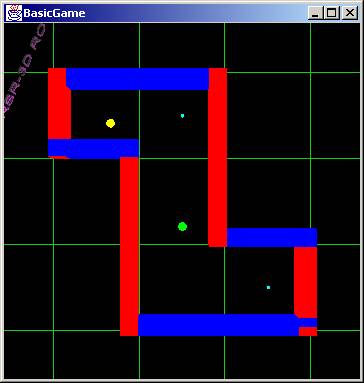
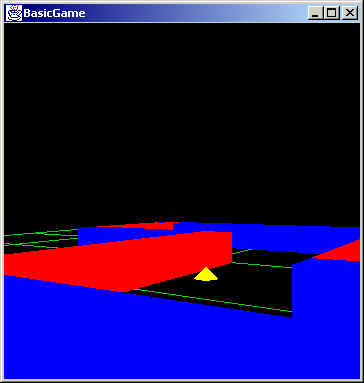

Professor: (late)Dr. Dan Zytkow
Semester: 2000 Spring
Grade: A
Project: Simulation of a game played by robots with a mind of their own. The robots run around in a maze, picking up weapons and firing at each other.
Project files:
- Source code (jar file)
- Java classes (jar file)
- runit.bat
- Project report
- Chain of Responsibiliy presentation file
Screen shots:

